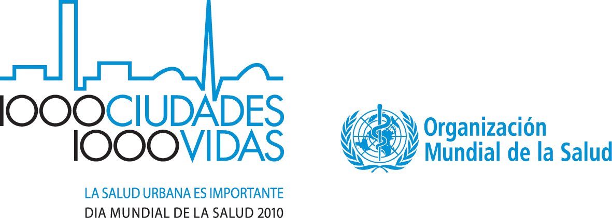
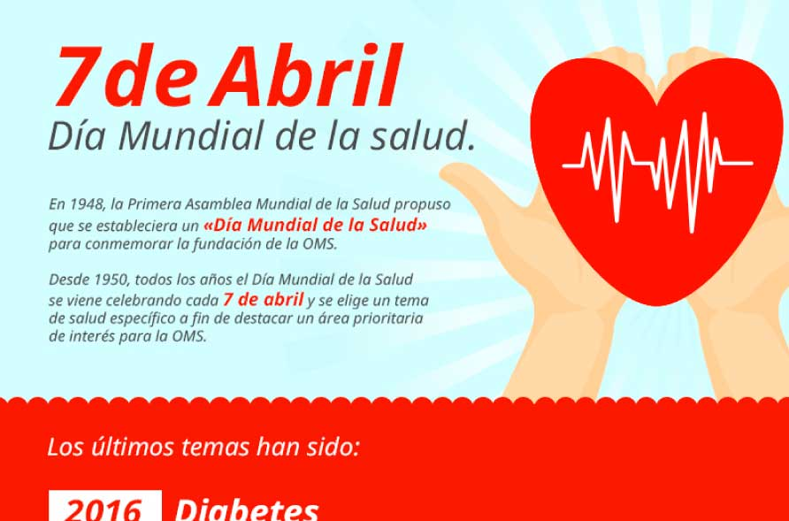

Dia Mundial de la Salud 7 de abril
INFOGRAFIA
Información sobre la intruduccion de la infografia sobre el dia Mundial de la salud

El Día Mundial de la Salud se celebra el 7 de abril de cada año para conmemorar el aniversario de la fundación de la Organización Mundial de la Salud (OMS) en 1948.Se trata sobre:
- Se trata de un acontecimiento internacional que invita a todo el mundo desde los dirigentes mundiales hasta la población de todos los países a prestar atención a un problema de salud concreto con repercusiones planetarias.
- Al centrarse en problemas de salud nuevos y recientes, esta celebración nos brinda la oportunidad de empezar a actuar de forma colectiva para proteger la salud y el bienestar del ser humano, y buscar soluciones válidas para todos nosotros.
- El tema del Día Mundial de la Salud 2012 es el envejecimiento y la salud, y el lema, "La buena salud añade vida a los años". Se trata de mostrar cómo gozar de buena salud durante toda la vida puede ayudarnos en la vejez a tener una vida plena y productiva, y a desempeñar un papel activo en nuestras familias y en la sociedad. El envejecimiento nos afecta a todos, jóvenes o viejos, hombres o mujeres, ricos o pobres, con independencia de dónde vivamos.
- información sobre envejecimiento y salud, incluidas las tendencias demográficas;
- mensajes clave y llamamientos a la acción;

-
1.-Cuando se celebra y porqué?
-
2.-Que se trata de conseguir con la compañía?
-
3.-Qué hace la OMS?
-
4.- Cobertura Sanitaria Nacional
-
5.- Qué es lo que no incluye la cobertura sanitaria universal?